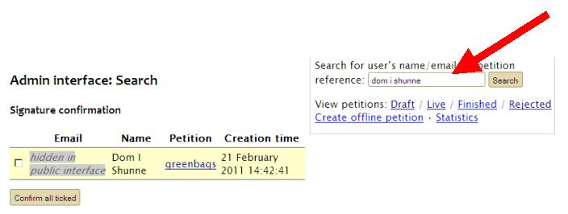
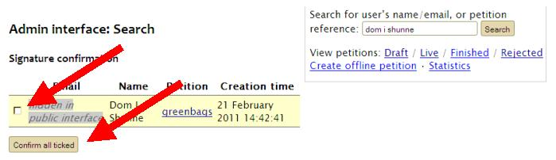

Finding an unconfirmed signature in the system, and confirming it manually
A person’s signature is only shown on the public website for a particular petition once they have confirmed their signature by clicking on a confirmation link sent to them by email.
You may need to confirm a signature manually if the signer says that they did not receive the confirmation email, or if they are having trouble with the confirmation link.
All signatures, whether confirmed or not, appear on the admin interface page for a particular petition, under ‘Signers’, but it is not possible to confirm a signature from that screen.
Instead, search for the name or email address of the signer:
To confirm the signature, tick the box next to the relevant signature, and click the ‘Confirm all ticked’ button:
The signature will now be visible on the public website.
If you confirm a signature accidentally then you can simply remove it, following the Removing a Signature process.
NOTE: IF A SIGNER HAS SPELT THEIR EMAIL ADDRESS INCORRECTLY, THEN THEY WILL NOT APPEAR IN THE LIST OF UNCONFIRMED SIGNATURES. The signature will not appear in the database at all, regardless of what you search under. Therefore if you cannot find a record for someone, please ask them to resign the petition, ensuring that they have no made any typoes or errors in their email address.